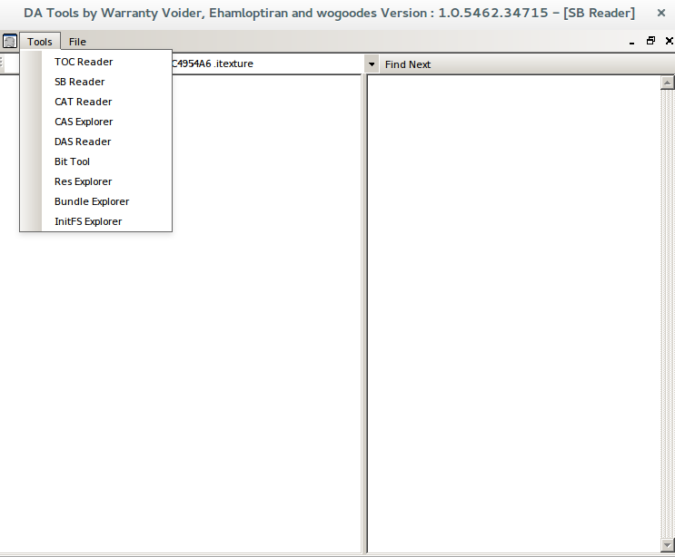
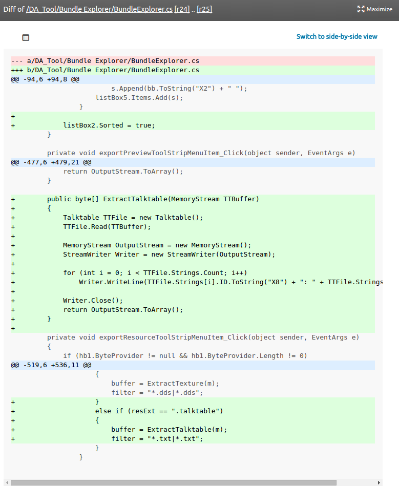
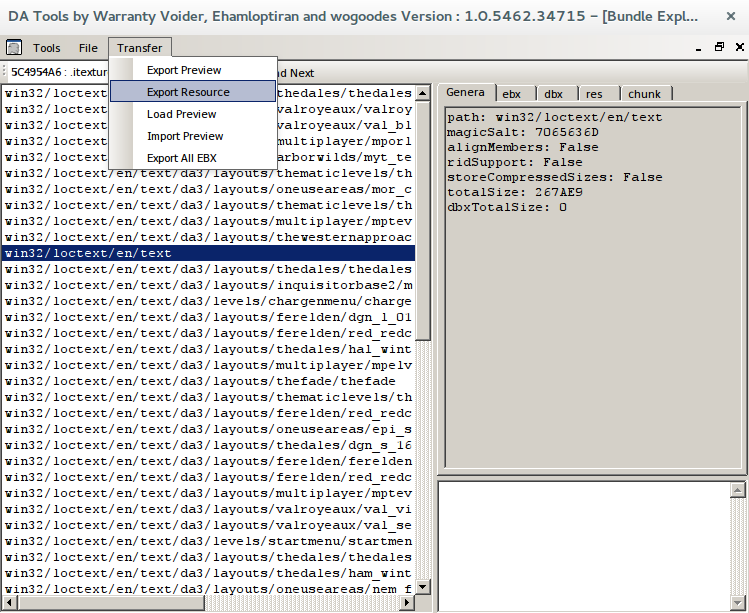
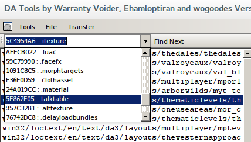
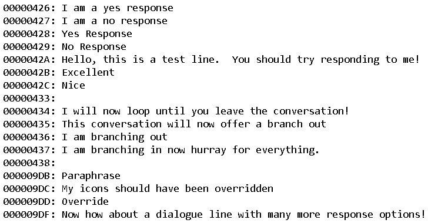

I thought this was an interesting case of technical problem solving. My friend @aeleruil was trying to dump the dialogue text from DAI so he could make a bot. He found an existing tool, but as you would expect from freshly baked OSS modding software it is not... immediately clear how to use it:

He determined that it was definitely capable of doing what he wanted because the feature addition had been mentioned as being added in revision 25. After some searching and fiddling I realized I might have better luck just reading the code. What is added in revision 25?

From the filename we can see that we want the Bundle Explorer. This takes an SB file and a CAT file and produces a list of what look like path identifiers. I still don't know exactly what these file formats are, but we worked out by trial and error that providing it with loctext/en.sb and cas.cat made it do a thing.

From the totalSize field, it seems win32/loctext/en/text is what we want: a big 2.5MB chunk of non-specific text. Unfortunately, just selecting that and running "Export Resource" does a good deal of nothing at all. Not even an error message!
So, back to the code. What could cause it to fail silently?
private void exportResourceToolStripMenuItem_Click(object sender, EventArgs e)
{
if (hb1.ByteProvider != null && hb1.ByteProvider.Length != 0)
{
int n = listBox1.SelectedIndex;
int a = listBox2.SelectedIndex;
int b = listBox4.SelectedIndex;
if (n == -1 && a == -1 && b == -1)
return;
MemoryStream m = new MemoryStream();
for (int i = 0; i < hb1.ByteProvider.Length; i++)
m.WriteByte(hb1.ByteProvider.ReadByte(i));
m.Seek(0, SeekOrigin.Begin);
byte[] buffer = null;
string filter = "";
if (a != -1)
{
Bundle c = sb.bundles[n];
Bundle.ebxtype entry = c.ebx[a];
buffer = ExtractEbx(m);
filter = "*.xml|*.xml";
}
else if (b != -1)
{
Bundle c = sb.bundles[n];
Bundle.restype entry = c.res[b];
string resExt = Tools.GetResType(BitConverter.ToUInt32(entry.rtype, 0));
if (resExt == ".mesh")
{
buffer = ExtractMesh(m);
filter = "*.obj|*.obj";
}
else if(resExt == ".itexture")
{
buffer = ExtractTexture(m);
filter = "*.dds|*.dds";
}
else if (resExt == ".talktable")
{
buffer = ExtractTalktable(m);
filter = "*.txt|*.txt";
}
}
if (buffer != null)
{
/* Write file here */
SaveFileDialog d = new SaveFileDialog();
d.Filter = filter;
if (d.ShowDialog() == System.Windows.Forms.DialogResult.OK)
{
BinaryWriter writer = new BinaryWriter(new FileStream(d.FileName, FileMode.Create));
writer.Write(buffer);
writer.Close();
MessageBox.Show("Resource saved to " + d.FileName);
}
else
return;
}
}
}
This function should always create a SaveFileDialog unless buffer is null. buffer will be be null if resExt does not match a defined extension. Hang on-- that ".itexture" looks familiar!

Sure enough, there's .talktable, lurking in the dropdown. To get the text, you need to select the path immediately above win32/loctext/en/text, click Find Next to get the talktable, and then run Export Resource.

Sometimes the code really is just the best available documentation!